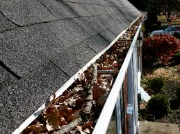

夏去秋来，生活在加拿大的我们，想必都已经感受到了秋的气息。在我们欣赏美丽颜色的同时，做为屋主的你也应该花一些时间，从里到外的检查一下房子，为寒冷漫长的冬天和潮湿的来年春天做些准备了。
可能用到的工具- 梯子
- 望远镜
- 刷子
- 铁锹
- 吸尘器
- 电话
- 眼睛
屋子外面
- 屋顶:
- 排水槽和排水管：
- 房子周围的坡度：
- 窗户：
你需要用梯子(必要的时候用望远镜)至少爬到屋檐，然后检查屋顶情况。如果是斜顶，那么就看油毡瓦片是否有开裂，翘曲，脱落，破损或缺失，必要的话，要尽早修补。屋顶和烟囱，通风管以及和墙交接的地方要特别的注意。比如，通风管的挡水板可能需要重新固定和密封。如果你的房子是平顶，那么就应把落叶，树枝清扫干净。同时检查屋顶是否有起泡，磨损，开裂等情况。当然，各处的挡水板依然是检查的重点。
既然你已经在屋顶了，那么就应该再检查一下烟囱的情况，当然不是所有的房子都有烟囱。砖砌的烟囱最常见的就是水泥或砖老化，剥落。同时烟囱要有防止动物进入的防护网。
排水槽必须清洁无杂物。在陈博士以前的文章里多次强调排水槽和排水管的重要性。这里我还要再次强调:排水槽不但一定不能漏水，而且还必须排水通畅。这对地下室的干燥至关重要。如果雨水或融化的雪水直接排在房子的地基附近，那么地下室潮湿、漏水的可能性就大大提高。


当你从房顶上下来的时候，要顺便检查一下排水管是否通畅。排水管要延长到离房子至少6尺远。如果房子超过40年，而且是地下排水，那么我建议你把它改成地上排水。

如果想让地下室常年保持干燥，那么你应该绕着房子走上一圈。看看房子周围的坡度是否能有效的让地表水远离房子。任何和房子接触的表面，都应该是靠近房子的一侧高，远离房子的一侧低。如果相反的话，落在地上的雨水或融化的雪水就会流向房子，造成地基墙长期高水压。这时，如果地基墙有一个微小如丝的裂缝，水就会直接进入地下室。即使没有裂缝，水也会通过扩散的方式进入地下室，造成地下室阴潮，时间长了，还会造成地基墙的剥落，引起结构性问题。
如果你认为坡度有问题，就应该拿起铁锹，把房子周围的草地重新翻新一下，或买些土重做坡度。
当你绕着房子走的时候，也应该顺便看一下窗户和门的情况。看它们是否需要重新刷漆，打胶(Caulking）。这里特别注意的地方就是墙和各种管道的接口处。
屋内
- 暖气炉：
- 密封条：
冬天里，就重要的就是暖气炉了。从专业的角度来说，陈博士建议你每年入冬前都应该给暖气炉做一次维护。这就像给汽车做保养一样。好的及时的保养当然可以延长发动机的效率和寿命。对暖气炉也是一个道理。打电话给维修人，让他们清理暖气炉的点火器，风扇，鼓风机，润滑轴承，更换空气过滤网，检查安全装置等等。这些都能有效的提高暖气炉的效率和寿命。当然，如果你打算入冬后再做维护的话，你可以自己先更换好过滤网。如果你有增湿器的话，也应该清理一下。
有了暖气，我们当然都希望它不会轻易散失。如果你的房子较新，那么门窗可能已经非常密闭。但对于老的门窗，密封性可能就很差了。当然你可以把它们重新换成新的门窗，但最经济实用的方法就是到五金店去买密封条。根据不同情况，会有不同的密封条。最简单的方法就是密封条包装上的图片和你的门窗很接近。那么你所做的就是买回来后，按照说明去安装。
结束语
以上所说的，都是入秋后需要做的一些最重要也是最基本的工作。当然你还应该用吸尘器清理屋子里的各个出风口，特别是大的回风口；清理厕所厨房的排风扇；清理烘干机的过滤网和排气口等。
版权声明：本网站所有内容，包括文字和音频，版权均属「陈博士验房」所有。任何个人、机构、组织未经本网允许，不得复制、改编、转发本网站内容到任何其它平台，违者将追究法律责任.